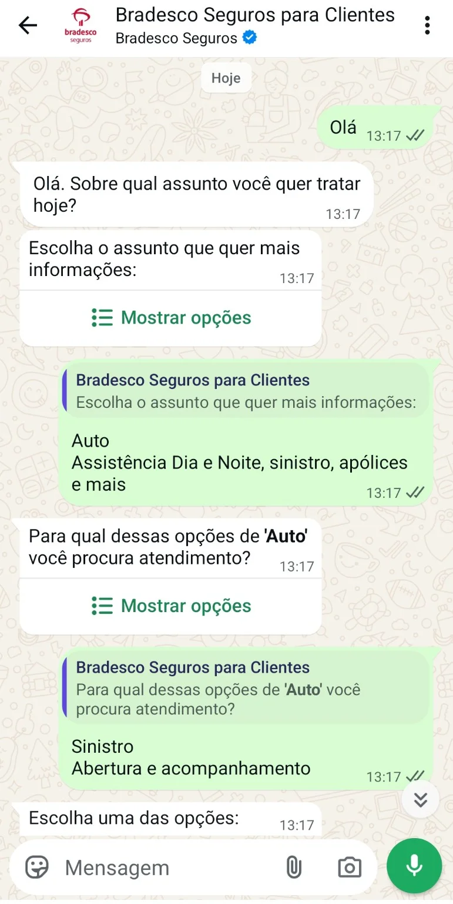
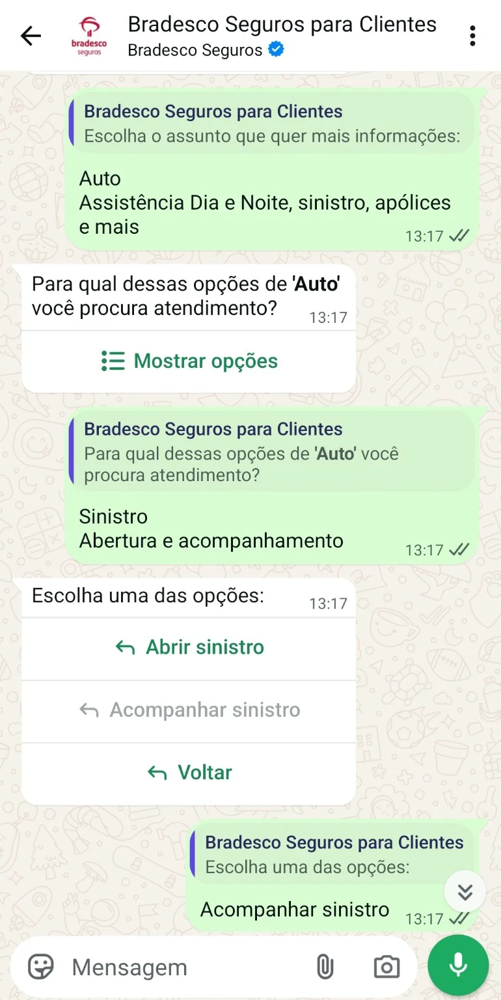

Produtos e backlog
Roadmap · Jira · Confluence
Product Owner · Analista de Negócios
Processos, produtos digitais e IA generativa.
Da escuta do usuário à organização das descobertas e validação.
Sou Berta Batista, Analista de Negócios e Product Owner. Conecto necessidades dos usuários, objetivos do negócio e entregas de tecnologia, do discovery à homologação.
Minha trajetória passa por energia, seguros, consultoria e indústria. Trabalho com evolução de produtos digitais, integrações, automação e melhoria de processos.
Estruturo requisitos, priorizo backlog e colaboro com negócio, desenvolvimento, arquitetura e UX/UI. Utilizo IA generativa para organizar descobertas e sintetizar reuniões, revisando o conteúdo e validando decisões com as pessoas envolvidas.

O QUE TRAGO PARA O PROJETO
Roadmap · Jira · Confluence
APIs · RPA · Oracle ERP
Consultas SQL e validação
Síntese e organização de descobertas
PROJETOS


Evolução da jornada de atendimento para facilitar o acesso a serviços e direcionar solicitações de autosserviço.
Discovery, mapeamento AS IS / TO BE, requisitos e critérios de aceite. Colaboração com negócio, arquitetura, desenvolvimento e UX/UI, além do acompanhamento de testes e homologação.
Integração de dados para automatizar a auditoria, preservar arquivos de origem e ampliar a rastreabilidade. Escopo inicial: Compras e Contas a Pagar.
Estruturação de requisitos e integrações, com foco em evidências, guarda segura dos arquivos e um processo extensível a outras áreas.
Veja como a integração substituiu a redigitação de lotes de 50 ou mais itens entre Compras, Logística e Fiscal.
RESULTADOS · TRANSFORMAÇÃO DIGITAL
Comparativo de janeiro a junho. A automação entrou em operação no fim de maio.
A emissão dentro do prazo passou de 35% para 72%.
Acompanhei os indicadores operacionais e a adaptação dos usuários ao processo automatizado.
Ver acompanhamento na Gestão de MudançasEstruturação de um canal digital para orientar o corretor desde o primeiro contato, organizar o direcionamento das solicitações e acionar o atendimento humano quando necessário.
Mais autonomia no primeiro atendimento, melhor organização do fluxo de solicitações e preservação do suporte especializado para os casos que exigem intervenção da equipe.
Um ano de atuação na implantação, entrada em operação e estabilização dos processos em ambiente fabril.
Atuei com a equipe na implantação dos módulos de Compras, Logística, Fiscal, Financeiro, Contas a Receber, Contas a Pagar e Contabilidade.
Oracle R12, Protheus, Synchro Fiscal e Softway Comex no fluxo de importação. O ERP também se conectava ao Kanban da Produção.
COMO ATUO NOS PROJETOS
Ao longo da minha carreira, atuei em projetos de energia, seguros, consultoria e indústria. Aqui, você encontra alguns desses trabalhos, de canais digitais e automação a integrações e implantação de ERP.
A gestão de mudanças começa junto com o projeto. Ao automatizar um processo ou implantar uma tecnologia, formalizar desde cedo o que muda, quem será impactado e quem responde pela transição ajuda a liderança a alinhar decisões e dá às equipes tempo para se preparar.
Desde o início do projeto, converse com as áreas e mapeie quais rotinas, responsabilidades e controles serão afetados pela nova tecnologia.
CONTATO
Análise de negócios, produtos digitais e evolução de processos.